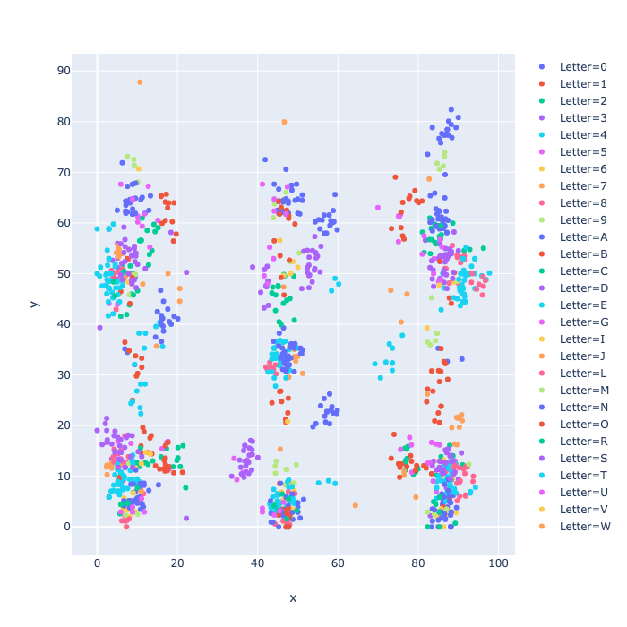
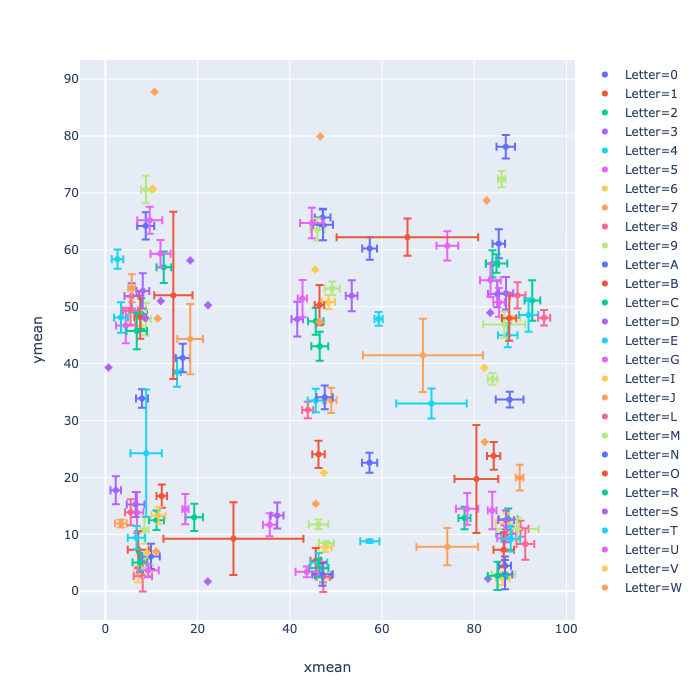
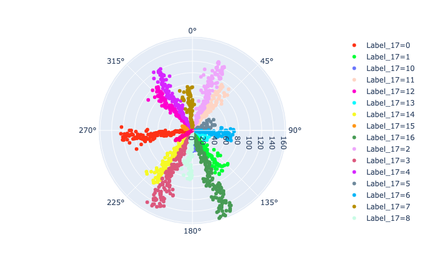
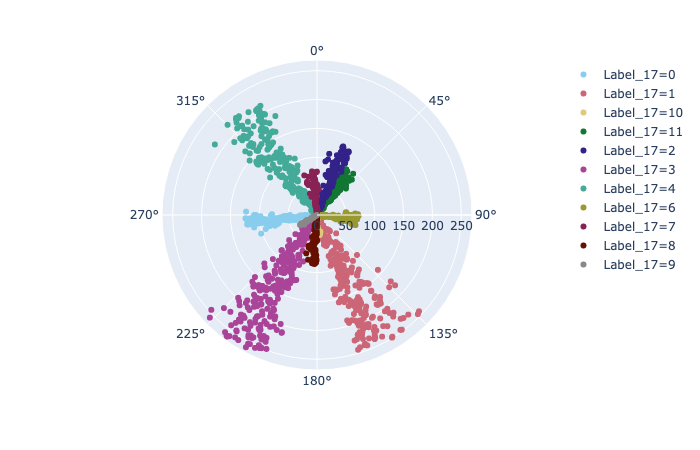
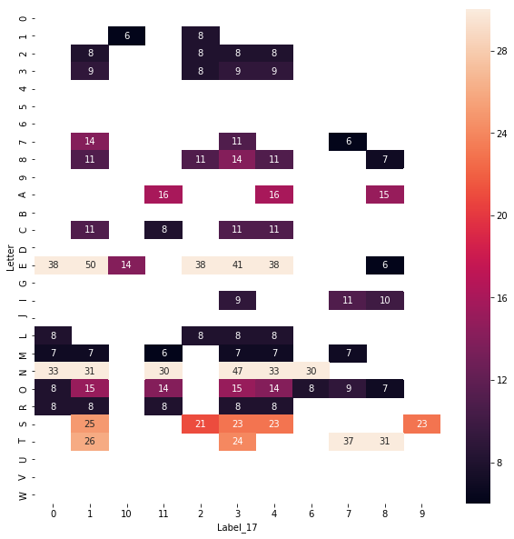

How distinct are the segments and their associated letters?
If the relative position of segment centroids combined with their overall arrangement by letter is discernible (just by simple charting and univariate stats), then there should be a reasonable chance that a machine learning technique like SVM may succeed at predicting letters.
# handle wildcards for files
import glob
# process images
from PIL import Image
from scipy import ndimage
# some math and linear algebra
import numpy as np
import math
# data frame processing
import pandas as pd
# charting
import plotly_express as px
import seaborn as sns
import matplotlib.pyplot as plt
# clustering
from sklearn.cluster import KMeans
import sklearn.metrics
# ignore warnings for prettier output
import warnings
warnings.filterwarnings('ignore')
def cart2pol(shape, vertices):
'''Convert the cartesian vertex coordinates to polar angles (phi)
Args:
- shape, list containing the overall dimensions in pixels [x,y]
- vertices, list of vertexes [[x1,y1], [x2, y2],... [xN, yN]]
Returns:
- list of angles
'''
# first, recenter the coordinates
vertices = [[i[0] - shape[0] / 2, i[1] - shape[1] / 2] for i in vertices]
# calculate angle as degrees +/-180
phi = [math.degrees(np.arctan2(i[1], i[0])) for i in vertices]
return phi
def get_vertices(vertices, image, letter, start, path='./data/captures/'):
'''
Create a dictionary that stores the centroid and angle for each segment within an letter for
each image. The key is (letter, image) and the attributes are:
- numpy shape of the letter (x, y)
- starting point (y) of the shape within the overall graphic (for reference)
- the vertices (x,y) of each segment centroid that defines a letter; usually between 3 and 9
vertices per letter
- the polar angle of the segment centroid relative to a centered letter
Args:
- vertices, list of vertexes [[x1,y1], [x2, y2],... [xN, yN]]
- image, a graphic image represented as a numpy array
- letter, single character
- start, numer representing the starting position (y coordinate) of the letter within the image
(for reference only)
- path, file path to image
Returns:
- dictionary of vertices and metadata
'''
filename = path + image + '/' + letter + '_' + start + '.png'
img = Image.open(filename)
# convert the PIL image to an numpy array
face = np.array(img)
# invert the image for labeling
face_not = np.logical_not(face)
# label each of the adjacent pixels, this defines the segment
label_im, nb_labels = ndimage.label(face_not)
# determine the centroid of each segment, exclude the background, 0
c_o_m = ndimage.measurements.center_of_mass(label_im, label_im, range(1, nb_labels + 1))
# scale the coordinates
# calculate aspect ratio of the letter
# this was later found to be uneccesary as SVM does this automatically
if face.shape[0] > face.shape[1]:
ratio_x = 1
ratio_y = face.shape[1] / face.shape[0]
else:
ratio_x = face.shape[0] / face.shape[1]
ratio_y = 1
# SVM suggests whole numbers, so additional scaling
ratio_x *= 100
ratio_y *= 100
# finally, scale by the aspect ratio
scale_x = ratio_x / face.shape[0]
scale_y = ratio_y / face.shape[1]
scaled_com = [[i[0] * scale_x, i[1] * scale_y] for i in c_o_m]
# calculate the polar angle
phi = cart2pol([ratio_x, ratio_y], scaled_com)
# create or update the dictionary entry
if (letter, image) in vertices:
vertices[(letter, image)]['shape'].append(face.shape)
vertices[(letter, image)]['start'].append(int(start))
vertices[(letter, image)]['vertices'].append(scaled_com)
vertices[(letter, image)]['phi'].append(phi)
else:
vertices[(letter, image)] = {
'shape': [face.shape],
'start': [int(start)],
'vertices': [scaled_com],
'phi': [phi]
}
return vertices
There were 22 folders containing sample images from several sources. Each image was a single letter. Folders 8, 21 and 22 were skipped since they have very dirty data.
vertices = dict()
# only process training images that were relatively clean
images = [1,2,3,4,5,6,7,9,10,11,12,13,14,15,16,17,18,19,20] # leave out images 8, 21 and 22
for image in images:
image = str(image)
for filename in glob.glob('./data/captures/' + image + '/?_*.png'):
# loop though all the images (directories) and letters (files)
start = filename[filename.rfind('_')+1:-4]
letter = filename[filename.rfind('/')+1]
# get the vertices (the method will assemble the parameters into a path and filename)
vertices = get_vertices(vertices, image, letter, start)
First, accumulate the total number of faces per letter, and then total vertexes per letter.
letter_vertices = dict()
for key in vertices.keys():
# letter is the first element of the (letter, image) key
letter = key[0]
# count the total number of vertices for this letter and image
total_vertices = np.sum([len(faces) for faces in vertices[key]['vertices']])
# count the total number of letters
total_count = len(vertices[key]['vertices'])
# start accumulating the counts that will be used later to calculate the average
if letter in letter_vertices:
letter_vertices[letter]['total_vertices'] += total_vertices
letter_vertices[letter]['total_count'] += total_count
else:
letter_vertices[letter] = {'total_vertices': total_vertices, 'total_count': total_count}
Next, calculate the average number of segment per letter and flatten the data for plotting
flattened_vertices = []
letters = vertices.keys()
for letter in letters:
total_vertices = letter_vertices[letter[0]]['total_vertices']
total_count = letter_vertices[letter[0]]['total_count']
avg_vertices = int(np.round(total_vertices / total_count))
for facets in vertices[letter]['vertices']:
if len(facets) != avg_vertices:
# skip facets that don't have the correct number of vertices
continue
for vertex in facets:
# add the vertex to the letter
flat_vertex = [letter[0]] + vertex
flattened_vertices.append(flat_vertex)
Convert the list to a data frame
columns = ('Letter', 'x', 'y')
df = pd.DataFrame(flattened_vertices, columns=columns)
px.scatter(df, x="x", y="y", color="Letter")

There are natural groupings of segments, run Kmeans to see how compact they are.
# create a data frame to save the results
columns = ('x', 'y', 'Letter', 'Segment')
df_clusters = pd.DataFrame(columns=columns)
for letter in letter_vertices.keys():
# calculate the number of clusters required (avg_vertices)
total_vertices = letter_vertices[letter]['total_vertices']
total_count = letter_vertices[letter]['total_count']
avg_vertices = int(np.round(total_vertices / total_count))
# select all of the vertices for the current letter, 'x' and 'y' are the features
X = df.loc[df['Letter'] == letter, ['x', 'y']]
# run the model
kmeans = KMeans(n_clusters = avg_vertices, random_state = 2019)
kmeans.fit(X)
# assign the current letter and clustering labels (a nominal segment name)
X['Letter'] = letter
X['Segment'] = kmeans.labels_
# append this letter's results to the master data frame
df_clusters = df_clusters.append(X, sort='True')
df_cluster_stats = df_clusters.groupby(['Letter', 'Segment']).agg(('mean', 'std'))
# Pandas does some crazy things with column names and indexes, so flatten them
df_cluster_stats.columns = [''.join(col).strip() for col in df_cluster_stats.columns.values]
df_cluster_stats.reset_index(inplace=True)
px.scatter(df_cluster_stats, x='xmean', y='ymean', color='Letter', error_x='xstd', error_y='ystd')

Note how letters J, O and T have very large error bars. I know 'O's and '0's got mixed together in the manual labeling process. 'J's sometimes had 2, 3, or even 4 segments, so their segments are sloppy. Likewise for 'T'. (need more letter training data!)
Keep things simple.
# similar to cartesian coordinates, flatten the data
flattened_phi = []
letters = vertices.keys()
for letter in letters:
# get the polar angles of the segments within a letter
for faces in vertices[letter]['phi']:
for phi in faces:
flat_phi = [letter[0]] + [phi]
flattened_phi.append(flat_phi)
Convert the list into a data frame
columns = ['Letter', 'phi']
df = pd.DataFrame(flattened_phi, columns=columns)
# data frame to save the results
df_phi = df[columns]
# use 'phi' as the feature to cluster
X = pd.DataFrame(df['phi'])
# specify a range of hyperparameters clusters
min_n = 5
max_n = 20 # for fun!!!
# a list for N clusters and Davies-Bouldin score
n_db = []
# iterate through a range of clusters
for n in range(min_n, max_n + 1):
# run the model
kmeans = KMeans(n_clusters = n, random_state = 2019)
kmeans.fit(X)
n_db.append(sklearn.metrics.davies_bouldin_score(X, kmeans.labels_))
label_name = 'Label_' + str(n)
df_phi[label_name] = kmeans.labels_
# which N has the smallest DB score?
target_n = n_db.index(min(n_db))
print('DB scores are: ')
display(n_db)
print(f'Target score is: {target_n}, {round(n_db[target_n], 3)}, which is the {target_n + min_n} cluster solution')
DB scores are:
[0.37389688504980356,
0.34459546702845856,
0.3494102793704596,
0.3596633529059681,
0.3888715699619895,
0.4487928904676979,
0.4604162319657635,
0.4750606693092221,
0.43957059325763975,
0.4461595729494598,
0.42431169282507997,
0.4081772746576713,
0.4032682916674488,
0.40336476286208306,
0.4126858249693549,
0.42235931793326975]
Target score is: 1, 0.345, which is the 6 cluster solution
Note that magnitude has no meaning in this context, just angle is significant.
df_phi['Label_17'] = df_phi['Label_17'].astype(str)
px.scatter_polar(
df_phi,
theta="phi",
color='Label_17',
color_discrete_sequence=px.colors.qualitative.Light24
)

When examining the polar plot, there were clusters that were outliers and therefore noise:
And several clusters that needed to be combined due to close proximity:
# remove noisy clusters
noise = ['5', '13', '15']
df_phi_signal = df_phi.loc[~df_phi['Label_17'].isin(noise), ['phi', 'Letter', 'Label_17']]
# combine similar clusters
df_phi_signal.loc[df_phi_signal['Label_17']=='16', 'Label_17'] = '1'
df_phi_signal.loc[df_phi_signal['Label_17']=='14', 'Label_17'] = '3'
df_phi_signal.loc[df_phi_signal['Label_17']=='12', 'Label_17'] = '4'
px.scatter_polar(
df_phi_signal,
theta="phi",
color='Label_17',
color_discrete_sequence=px.colors.qualitative.Safe
)

That looks a lot cleaner. Arguablly, cluster 9 should be removed or merged with cluster 3; likewise cluster 10 should be removed outright (I'll keep it to aid future discussion).
Create a heatmap of letters by clusters
# count the number of cluster occurences by letter
df_phi_stats = df_phi_signal.groupby(['Letter', 'Label_17']).count()
# fix the weird naming
df_phi_stats.columns = ['phi_count']
df_phi_stats.reset_index(inplace=True)
# pivot the dataframe into Letter by Cluster (Label_17)
df_phi_pivot_count = pd.pivot_table(df_phi_stats, values='phi_count', index='Letter', columns='Label_17')
# create the heatmap, remove cells <= 5 to make the distribution clearer
plt.figure(figsize=(10, 10))
sns.heatmap(df_phi_pivot_count[df_phi_pivot_count > 5], annot=True, vmax=30)

The heatmap is revealing. Several points of note:
Thinking of any further cluster drops or merging:
Investigating whether SVM can be applied to the problem of successfully labeling letters via the poly coordinates of their segments.